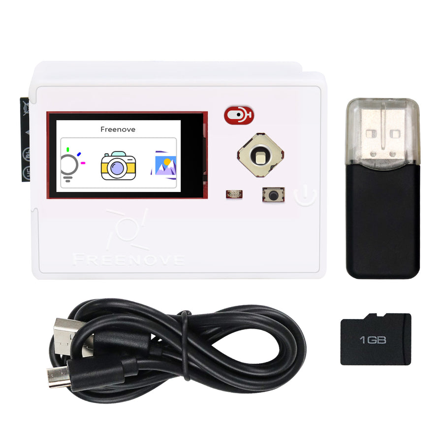
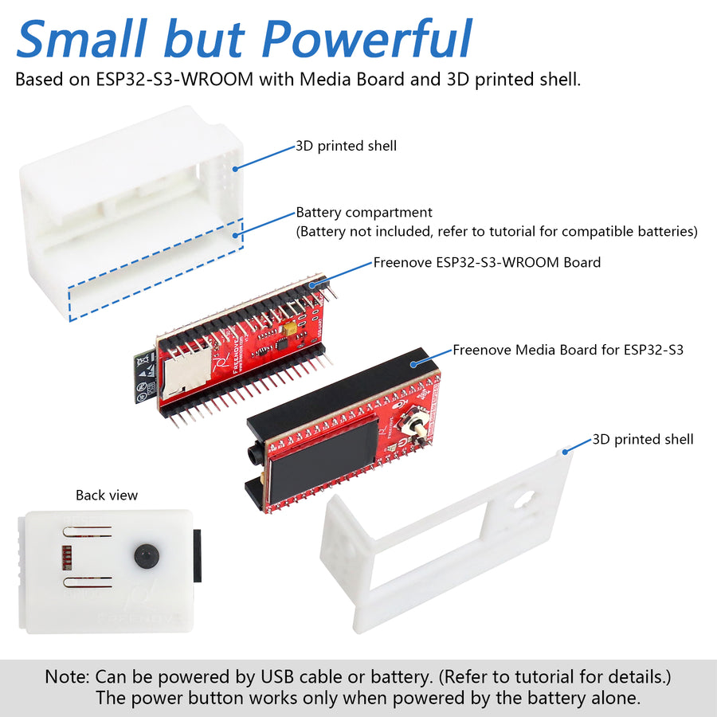
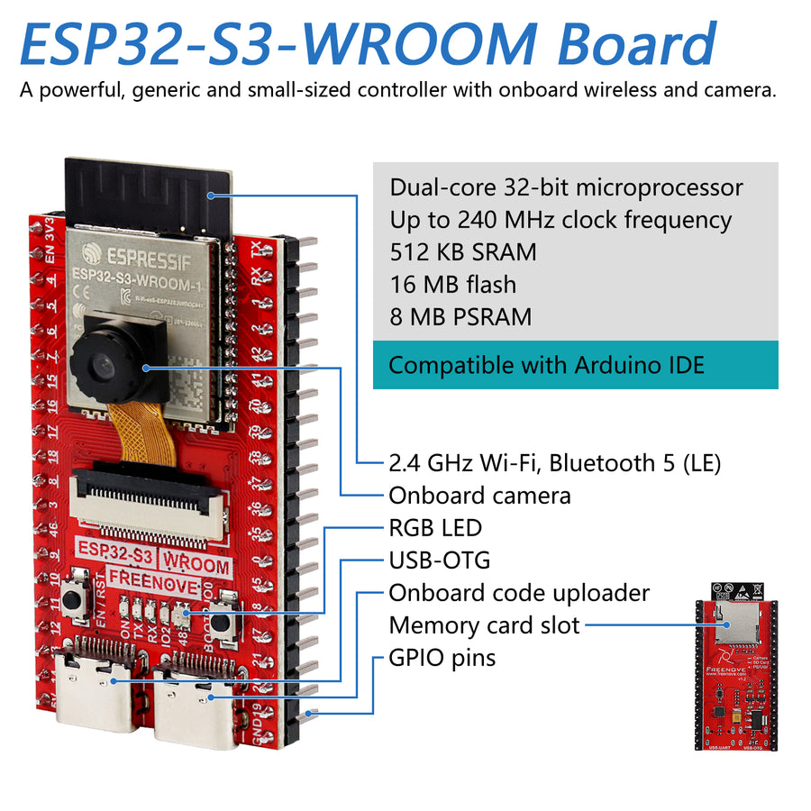

Get a Freenove Media Kit
Retroreader is software. The small Freenove kit is the hardware it runs on.
What is the kit?
The Freenove Media Kit is a pocket-sized electronics and programming kit built around an ESP32-S3 computer. It combines a processor, memory, Wi-Fi, a microSD-card slot, screen, five-way control, speaker, microphone and headphone socket in a 3D-printed case.
Freenove designed it for hobby tinkering, learning to code and experimenting with projects such as cameras, music players and voice recorders. It was not designed specifically as a book reader. Retroreader replaces the demonstration firmware and puts those conveniently grouped parts to work as a portable, speech-first reading device.

Buy the right model
The exact model used by Retroreader is:
Freenove Media Kit for ESP32-S3, 1.14 Inch Screen — FNK0102A
Check both FNK0102A and 1.14 Inch Screen before ordering. Freenove sells other screen sizes and similarly named boards; the public Retroreader installer targets this model.
Buy from the official Freenove store
The official store is often the least expensive route, although international delivery can take longer and tax or customs charges may apply.
Find one locally
Search Amazon for Freenove FNK0102A. Freenove products are stocked locally in many countries, usually with faster shipping for a little extra cost. Availability and price vary, so still check the model and 1.14-inch screen in the listing.
What is inside?


Product photographs and diagrams are reproduced from Freenove’s official FNK0102 product page.